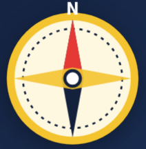
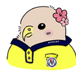
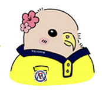

STEP 1자기
이해

나의 진로 보물지도
꿈it(잇)다 결과 정리 가이드
20년월일교시3학년반번이름
✦ 교집합 찾기(황금 지점): 매라매 챗봇과 진로 탐색 ✦

매라매 챗봇님, 안녕하세요. 저는 중학교 학년 학생으로, 진로 수업 시간에 ‘꿈it(잇)다’ 시스템을 이용해 진로심리검사 3가지를 했습니다.
01직업흥미검사(H)흥미 유형 · 관심 직업
일반 흥미 유형으로는 1순위유형, 2순위는유형이 가장 높게 나왔고,
관심 직업으로는,입니다.
선호 직업군(흥미) 결과 1순위유형, 2순위는유형이 가장 높게 나왔고,
관심 직업으로는,입니다.
일반 흥미와 선호 직업군(흥미)의 일치 정도 :
02직업적성검사강점 능력 · 관심 직업
높은 적성으로 나온 능력 3가지는123이고,
가장 낮게 나온 능력은능력입니다.
관심 직업 :,입니다.
03직업가치관검사중요한 가치 · 관심 직업
상위 직업가치관으로는123입니다.
제가 중요하게 생각하는 직업가치관은,,입니다.
관심 직업 :,입니다.
매라매 챗봇님, 저의 직업흥미검사(H), 직업적성검사, 직업가치관검사 결과에 가장 알맞은 직업을 추천해 주세요.

| 구분 | 11순위 | 22순위 | 33순위 |
|---|
매라매 챗봇 상담 결과
추천받은 직업 | | | |
진로심리검사 결과 + 매라매 챗봇 상담 결과를 함께 살펴보세요.